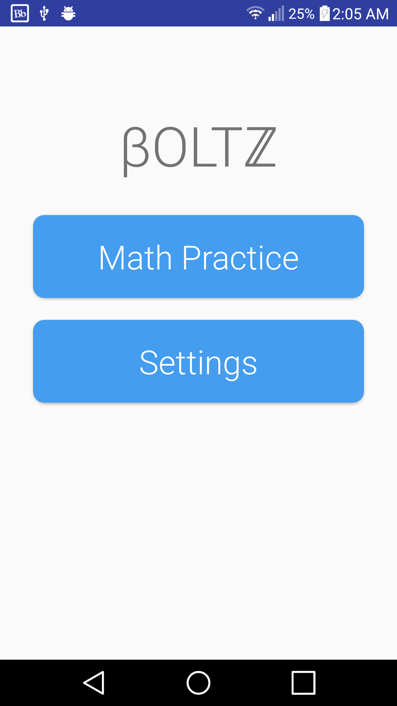
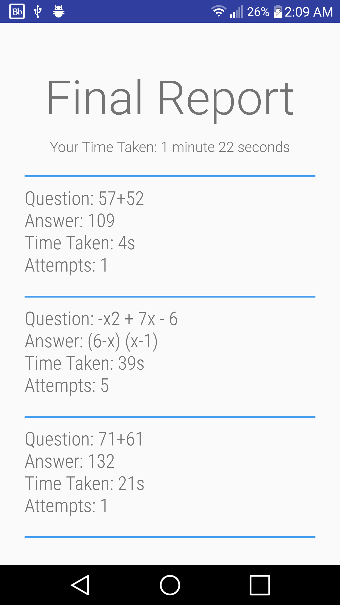

Three Stories Short
No rest for the weary, even during winter break
The ten days of winter break 2016-2017 saw me attend my first concert in Canada, spend a fantastically eventful week in the United States and attend my first Canadian New Year's party. My tyrant of a scrum master (yours truly), however, forgot that I was supposed to be on furlough, and assigned me seven user stories to have finished by January 2nd when classes resume.
I started with the easiest task first: overhauling the Start Screen's user interface. This user story morphed into overhauling the entire application's UI so that I didn't have to cringe every time I handed people the phone when having them test the app out. It was during this UI overhaul that I also changed the name of the application to βOLTℤ. The name came about during a conversation I had with a friend. The entire transcript of the conversation can be found at a data storage facility of whatever government spying organisation happened to be listening in that day.
The next user story I tackled was factorization, and I started off by approaching the problem in the most childish, hacky, hard-coded way possible. Around 50 foul lines of code had to be scrapped after I picked up a pen and wrote an algorithm that generated and checked factorization problems. And so a new "Bolt" was born. Every different mathematical concept tested in this app is referred to as a bolt, and up next after the factorisation bolt were the Trigonometry, Area Calculation, and Derivative bolts.
However, those user stories had to wait because although they added more to the math testing portion of the application, they did little to make the app feel complete and well done to the user. And so I instead decided to work on a Settings menu and a Final Report Screen. The Final Report screen would present the user with data such as the amount of time they spent on a question and the number of attempts they needed to answer the problem correctly.

Implementing the Settings and Final Report Screens was a stimulating challenge, and I learned a lot about fundamental Android practices during the implementation process. The Android support documentation and the Udacity Android Developer course helped a great deal when dealing with components such as RecyclerViews and Preference Fragments, both of which were crucial to the afforementioned User Stories.
Speaking of User Stories...if you've been keeping count, there's still three left, and it's already January 2nd. Classes start today, and I'm sitting writing a blog post about how and why I couldn't complete them instead of actually working on them. Ah well, I'm sure the scrum master will understand. He's a fairly reasonable guy once you get to know him.
P.S. There's a new logo now too 😃